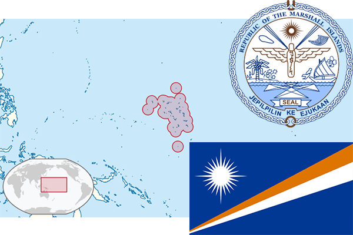

To`liq nomi: Marshall Orollar Respublikasi
Region: Okeaniya
Qonunchilik shakli: Respublika
Mustaqillik kuni: 21-oktabr 1986-yil (AQSHdan)
Poytaxt: Madjuro
Maydoni: 181 km² (dunyoda 213 -o`rinda )
Chegaradosh davlatlari: yo`q
Aholisi: 53 066 (dunyoda 203 - o`rinda, 2016 -yil roʻyxat)
Aholi zichligi: 293/km²
Aholining o`rtacha yoshi: 70,65 yil (72,7 ayollar, 68,6 erkaklar)
Rasmiy tili: Marshal va ingliz tili
Dini: Xristian
Pul birligi: Amerika dollari
Telefon prefiksi: +692
Internet domen: .mh
Xalqaro tashkilotlarga a`zoligi: BMT (1991 – yildan)
Dengiz va okeanlarga chiqishi: Tinch okeani
YIM: Butun: $ 115 mln, Jon boshiga $ 1600 (2001 - yil roʻyxati)
Yirik shaharlari: Madjuro